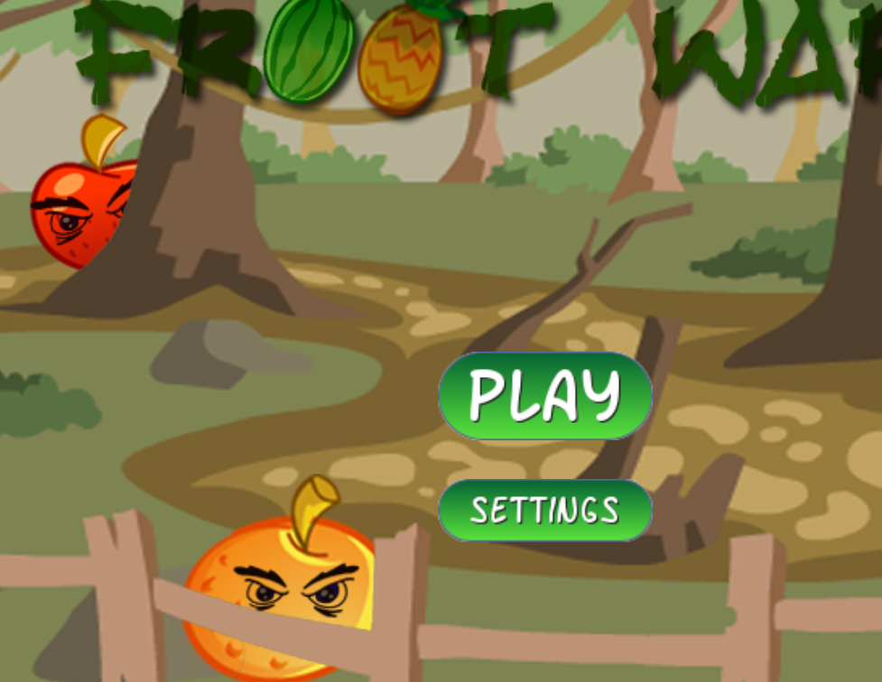

利用 Html5 建立 Github Pages 上的個人網站
1. The Essential Guide to HTML5 - Using Games to Learn HTML5 and JavaScript (2018)
https://link.springer.com/book/10.1007/978-1-4842-4155-4
Source Code: https://github.com/Apress/essential-guide-html5
Example: ./../downloads/essential-guide-html5/Ch04/cannball1.html
2. Pro HTML5 Games - Learn to Build your Own Games using HTML5 and JavaScript (2017)
https://link.springer.com/book/10.1007/978-1-4842-2910-1
Source Code: https://github.com/apress/pro-html5-games-17
Example: ./../downloads/pro-html5-games-17/9781484229095/9781484229095_Ch05/index.html

1. Introducing JavaScript Game Development - Build a 2D Game from the Ground Up (2017)
https://link.springer.com/book/10.1007/978-1-4842-3252-1
2. JavaScript Creativity - Exploring the Modern Capabilities of JavaScript and HTML5 (2014)
https://link.springer.com/book/10.1007/978-1-4302-5945-9